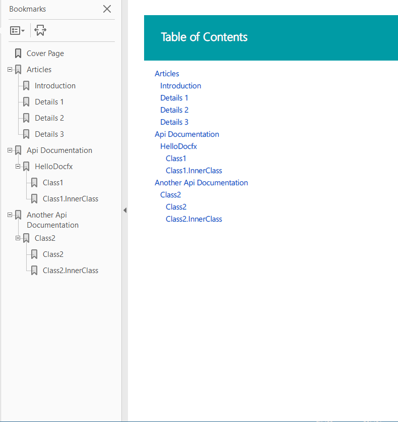

Walkthrough Part III: Generate PDF Documentation
After completing Walkthrough Part II: Add API Documentation to the Website, we successfully create a website containing both Conceptual and API documentation. In this section, we will generate PDF files for these articles.
After completing walkthrough part II, our D:\docfx_walkthrough\docfx_project folder is in the following structure(Download the artifacts HERE):
|- articles
|- images
|- src
|- src2
|- index.md
|- toc.yml
|- docfx.json
Step0. Install prerequisite
We leverage wkhtmltopdf to generate PDF. Download wkhtmltopdf to some folder, e.g. E:\Program Files\wkhtmltopdf\, and save the executable folder path to %PATH% by: set PATH=%PATH%;E:\Program Files\wkhtmltopdf\bin.
NOTE
Alternativeley you can install wkhtmltopdf via chocolatey with choco install wkhtmltopdf. This will also add the executable folder to %PATH% during installation.
Step1. Add a toc.yml specific for PDF
Current design is that each TOC file generates a corresponding PDF file, TOC is also used as the table of contents page of the PDF, so we create a toc.yml file specific for PDF under a new folder pdf, using TOC Include to include content from other TOC files.
- name: Articles
href: ../articles/toc.yml
- name: Api Documentation
href: ../api/toc.yml
- name: Another Api Documentation
href: ../api-vb/toc.yml
Step2. Add pdf section into docfx.json
Parameters are similar to build section, definitely it is using a different template (the builtin template is pdf.default), with another output destination. We also exclude TOC files as each TOC file generates a PDF file:
...
"pdf": {
"content": [
{
"files": [
"api/**.yml",
"api-vb/**.yml"
],
"exclude": [
"**/toc.yml",
"**/toc.md"
]
},
{
"files": [
"articles/**.md",
"articles/**/toc.yml",
"toc.yml",
"*.md",
"pdf/*"
],
"exclude": [
"**/bin/**",
"**/obj/**",
"_site_pdf/**",
"**/toc.yml",
"**/toc.md"
]
},
{
"files": "pdf/toc.yml"
}
],
"resource": [
{
"files": [
"images/**"
],
"exclude": [
"**/bin/**",
"**/obj/**",
"_site_pdf/**"
]
}
],
"overwrite": [
{
"files": [
"apidoc/**.md"
],
"exclude": [
"**/bin/**",
"**/obj/**",
"_site_pdf/**"
]
}
],
"wkhtmltopdf": {
"additionalArguments": "--enable-local-file-access"
},
"dest": "_site_pdf"
}
Now, let's run docfx, and you can find pdf file walkthrough3_pdf.pdf generated under _site_pdf folder:

Optional Step3. Enable plugins
If you wish to use plugins with pdf as well, you need to add a template node to the pdf section. It needs to start with the pdf.template followed by the path to the plugins you want to use:
"template": [
"pdf.default",
"pluginPackages/rest.tagpage.2.31.0/content"
],
Conclusion
In this walkthrough, we build a PDF file according to the TOC file under pdf folder. Note that TOC plays an important role in PDF generation, it not only determines the files included in the PDF, but also the table of contents page for this PDF file. One TOC file generates one PDF file, so don't forget to exclude TOC files you don't want from docfx.json.